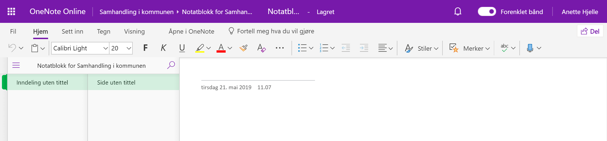

Notatblokken er en Microsoft OneNote som er delt med alle som har tilgang til prosjektet. Dette er et verktøy for å skrive og lagre fellesnotater, inkludert møtenotater. Du kan lære mer om OneNote på Microsoft sine egne supportsider.
